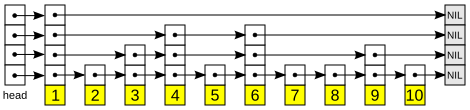
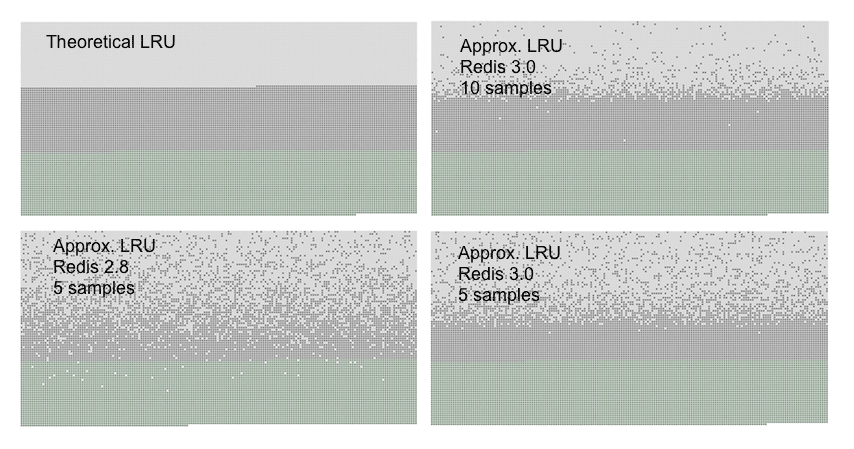
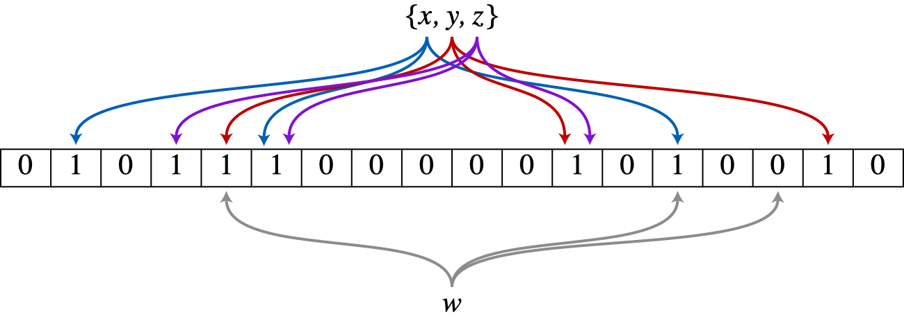

Redis
In-memory хранилище: структуры данных, персистентность, репликация, кэширование и типичные паттерны.
-
Что такое Redis и зачем он ML-инженеру?
Redis (REmote DIctionary Server) — это in-memory key-value хранилище: сервер, который держит все данные в оперативной памяти и отдаёт их по ключу. Значением может быть не только строка, но и готовая структура данных — хэш, список, множество, отсортированное множество, поток.
Если совсем простыми словами: Redis — это огромный общий
dictв Python, к которому по сети одновременно ходят все ваши сервисы. Положил по ключу — любой другой процесс на любой машине тут же может достать. И делается это за доли миллисекунды, потому что никакого диска на пути запроса нет.- In-memory — данные живут в RAM, а не на диске. Отсюда скорость, но и ограничение: объём данных не может превышать память сервера.
- Key-value — модель «ключ → значение», как у словаря. Нет таблиц, схем, JOIN и SQL: вы всегда обращаетесь к данным по ключу.
- Latency (задержка) — время ответа на один запрос. У Redis типичная latency внутри дата-центра — 0.1–1 мс, у запроса в PostgreSQL с диском — единицы и десятки миллисекунд.
Сервис рекомендаций отвечает пользователю за бюджет 50 мс. На каждый запрос нужно достать 40 признаков пользователя.
- Из PostgreSQL: JOIN трёх таблиц, ~15 мс. Остаётся 35 мс на модель и сеть.
- Из Redis: один
HGETALL features:user:42, ~0.5 мс. Остаётся почти весь бюджет.
Один экземпляр Redis на обычном сервере держит порядка 100 тысяч операций в секунду на простых командах, а с пакетной отправкой (pipeline) — в разы больше.
Почему Redis такой быстрый
Redis выполняет команды в одном потоке, строго по очереди. Звучит как недостаток, но это главная причина скорости и простоты:
- нет блокировок (locks) — двум потокам не нужно договариваться, кто сейчас меняет данные;
- каждая команда атомарна сама по себе: пока выполняется
INCR counter, никакая другая команда не вклинится посередине; - нет накладных расходов на переключение контекста между потоками.
Сетевой ввод-вывод обслуживается через event loop (цикл событий, механизм
epoll/kqueueв ОС): один поток следит за тысячами соединений и обрабатывает то, где пришли данные.С версии 6.0 Redis умеет читать и писать в сокеты несколькими I/O-потоками, а сохранение на диск и удаление больших ключей идут в фоне (отдельные потоки или дочерний процесс). Но сами команды над данными по-прежнему выполняются одним потоком. Именно это имеют в виду на собеседовании, когда говорят «Redis однопоточный».
- Всё в памяти — доступ к RAM на порядки быстрее, чем к диску, даже к SSD.
- Эффективные структуры данных — у каждого типа своя оптимизированная реализация: маленькие хэши и списки хранятся компактно в одном куске памяти (listpack), отсортированные множества — в skip list с логарифмическим поиском.
- Простой протокол RESP — текстово-бинарный формат, который очень дёшево разбирать.
Обычно узким местом становится не процессор Redis, а сеть (round-trip между клиентом и сервером) и объём памяти.
Раз команды идут строго по очереди, одна медленная команда блокирует всех.
KEYS *на 10 миллионах ключей илиHGETALLна хэше из миллиона полей может «подвесить» сервер на секунды, и в это время не обслуживается ни один другой клиент. Поэтому в проде вместоKEYSиспользуют итеративныйSCAN, а большие коллекции читают порциями.Команды трёх клиентов встают в одну очередь и выполняются строго по одной — поэтому каждая атомарна и блокировки не нужны. Но когда в очередь попадает KEYS *на 10 млн ключей, остальные команды ждут, пока он не закончится.SCANотдаёт ключи порциями по ~100, и между порциями успевают выполниться команды других клиентов.Где Redis используется в ML
- Кэш инференса — сохраняем предсказание модели по хэшу входа: повторный запрос с теми же признаками не гоняет модель заново.
- Кэш эмбеддингов — эмбеддинг текста или картинки считается один раз, дальше берётся из Redis.
- Online feature store — свежие признаки пользователя или товара для real-time инференса. Например, Feast умеет использовать Redis как online-хранилище.
- Очередь задач — брокер для Celery или RQ: API кладёт задачу «переобучить», «посчитать батч», воркер забирает.
- Rate limiting — ограничение «не больше 100 запросов к LLM-API в минуту на пользователя».
- Сессии и история диалога чат-бота с автоматическим удалением через заданное время.
Redis — не основная база данных для критичных данных (хотя умеет сохранять их на диск), не аналитическое хранилище и не замена PostgreSQL. Его роль — быстрый слой перед основным хранилищем или временное общее состояние между сервисами. Про общие классы NoSQL-хранилищ и место key-value среди них — в разделе Что такое NoSQL?.
В 2024 году Redis сменил лицензию на более ограничительную, и сообщество под эгидой Linux Foundation сделало форк Valkey — совместимый по протоколу и командам. Многие облака (например, AWS ElastiCache) предлагают оба варианта. Для разработчика разницы почти нет: те же команды, тот же клиент
redis-py.- «Redis однопоточный, значит медленный». Наоборот: однопоточность убирает блокировки, а упирается Redis обычно в сеть, а не в CPU.
- Хранить в Redis единственную копию важных данных. Даже с persistence при падении можно потерять последние секунды записей. Источник правды — основная БД.
- Класть всё подряд без TTL (времени жизни ключа). Память конечна, и через месяц кэш займёт весь сервер.
Что такое Redis?
In-memory key-value хранилище: данные лежат в оперативной памяти, доступ идёт по ключу, а значениями могут быть строки, хэши, списки, множества, отсортированные множества и потоки. Типичная задержка — доли миллисекунды.
Почему Redis быстрый, если он однопоточный?
Данные в памяти, структуры данных оптимизированы, протокол простой, а однопоточное выполнение команд избавляет от блокировок и переключения контекста. Узкое место обычно сеть и объём памяти, а не процессор.
Что значит «однопоточный» в современном Redis?
Команды над данными выполняются одним потоком строго по очереди, поэтому каждая команда атомарна. При этом сетевой I/O может обслуживаться несколькими потоками (с 6.0), а сохранение на диск и ленивое удаление идут в фоне.
Чем опасна однопоточность?
Одна тяжёлая команда (
KEYS *, чтение огромной коллекции целиком) блокирует обработку всех остальных клиентов. Поэтому используютSCANи читают большие структуры порциями.Где Redis применяется в ML-системах?
Кэш предсказаний и эмбеддингов, online feature store для real-time инференса, брокер очередей задач для Celery/RQ, rate limiting запросов, хранение сессий и истории диалогов с TTL.
Почему Redis не стоит использовать как единственное хранилище критичных данных?
Он ограничен объёмом RAM, а даже с включённым сохранением на диск при сбое можно потерять последние записи. Redis — быстрый слой поверх основной БД, которая остаётся источником правды.
-
Какие структуры данных есть в Redis?
В Redis значение ключа имеет тип, и у каждого типа свой набор команд. Основные типы:
- String — строка или байты (до 512 МБ), в том числе число;
- Hash — словарь «поле → значение» внутри одного ключа;
- List — упорядоченный список с быстрыми вставками по краям;
- Set — неупорядоченное множество уникальных элементов;
- Sorted Set (ZSet) — множество, где у каждого элемента есть числовой score, и элементы всегда отсортированы по нему.
Плюс специальные: Stream, Bitmap, HyperLogLog, геоиндексы.
Если совсем простыми словами: Redis — это не «словарь строк», а словарь, в котором значениями лежат готовые структуры данных. Выбрать правильную структуру — значит получить нужную операцию за $O(1)$ или $O(\log N)$ одной командой, а не тащить данные в Python и обрабатывать там.
Пять основных типов на конкретных ключах: INCRувеличивает число в String,HINCRBYменяет одно поле Hash, не трогая остальные, List работает как очередь (LPUSHслева,RPOPсправа), Set не добавляет дубликат, а Sorted Set послеZINCRBYсам переставляет alice на первое место по score.String
Самый простой тип: по ключу лежит строка байтов. Туда кладут JSON, сериализованный numpy-массив, токен сессии. Если строка — целое число, работают атомарные счётчики
INCR/INCRBY: сервер сам прочитает, увеличит и запишет число за одну операцию.Ключевые команды:
SET,GET,MSET/MGET(много ключей за раз),INCR,SET ... NX(записать, только если ключа нет),SET ... EX 60(с временем жизни 60 секунд).SET pred:model_v3:ab12 '{"score": 0.87}' EX 3600 GET pred:model_v3:ab12 INCR requests:user:42 # -> 1, 2, 3 ... SET lock:retrain worker-7 NX EX 30 # OK только если замка ещё нетHash
Хэш — словарь внутри ключа:
features:user:42 → {age: 31, orders_30d: 5, avg_check: 1240}. Можно прочитать или обновить одно поле, не перезаписывая весь объект. Это идеальная форма для online-признаков: один ключ на сущность, поля — признаки.Команды:
HSET,HGET,HMGET(несколько полей),HGETALL(все поля),HINCRBY(атомарно увеличить поле),HDEL.HSET features:user:42 age 31 orders_30d 5 avg_check 1240 HMGET features:user:42 age orders_30d HINCRBY features:user:42 orders_30d 1JSON в строке проще, если объект всегда читается и пишется целиком. Hash выгоднее, когда поля обновляются по отдельности разными процессами: например, стриминговый пайплайн обновляет
orders_30d, а батчевый —avg_check. С JSON-строкой пришлось бы читать, менять и перезаписывать весь объект, рискуя затереть чужое изменение.List
Список — последовательность элементов с вставкой и удалением с краёв за $O(1)$.
LPUSH+RPOP— это очередь FIFO (первым пришёл — первым ушёл). БлокирующийBRPOPждёт, пока в пустом списке появится элемент, — так делают простую очередь задач без постоянного опроса.Команды:
LPUSH/RPUSH,LPOP/RPOP,BRPOP,LRANGE key 0 9(первые 10),LTRIM(обрезать до N последних — например, хранить 50 последних сообщений диалога).LINDEXиLSETдля элемента в середине списка работают за $O(N)$. Список хорош для краёв, а не для произвольного доступа.Set
Неупорядоченный набор уникальных строк. Проверка принадлежности
SISMEMBER— за $O(1)$. Есть операции над множествами: пересечениеSINTER, объединениеSUNION, разностьSDIFF.Пример:
SADD seen:user:42 item_17 item_99— товары, которые пользователь уже видел. При формировании рекомендаций отфильтровать увиденное — одна командаSMISMEMBERна весь список кандидатов.Sorted Set
Каждый элемент — уникальная строка с числовым score. Redis держит элементы отсортированными по score, поэтому «топ-10», «место игрока» и «все элементы со score от A до B» достаются за $O(\log N + M)$, где $M$ — размер ответа.
Внутри — skip list (многоуровневый связный список с логарифмическим поиском) плюс хэш-таблица для поиска score по элементу.
Команды:
ZADD,ZINCRBY(прибавить к score),ZRANGE key 0 9 REV WITHSCORES(топ-10 по убыванию),ZRANK/ZREVRANK(место),ZRANGEBYSCORE,ZREMRANGEBYSCORE(удалить по диапазону score).
Skip list — структура внутри Sorted Set. Нижний уровень — обычный отсортированный связный список всех элементов, верхние уровни — «экспресс-линии», которые перепрыгивают через часть элементов. Поиск идёт сверху вниз: по верхней линии, пока следующий элемент не больше искомого, затем спуск на уровень ниже. В среднем это $O(\log N)$ шагов вместо $O(N)$ у простого списка. Источник: Wikimedia Commons, автор Wojciech Muła, public domain. ZINCRBY leaderboard 50 alice ZINCRBY leaderboard 80 bob ZRANGE leaderboard 0 9 REV WITHSCORES # топ-10: bob 80, alice 50 ZREVRANK leaderboard alice # -> 1 (второе место, счёт с нуля)Для rate limiting по «последним 60 секундам» кладут каждый запрос в sorted set с score = время запроса:
ZREMRANGEBYSCORE rl:user:42 0 (now-60)— выкинуть запросы старше минуты;ZCARD rl:user:42— сколько осталось в окне;- если меньше лимита —
ZADD rl:user:42 now <id запроса>.
Та же идея работает для «популярных товаров за последний час» или окна событий для признаков.
Лимит — 3 запроса за 60 секунд, score каждого элемента — время запроса. При now = 100 ZREMRANGEBYSCOREвыкидывает r1 и r2, в окне остаётся 2 запроса, и новый пропускается. Через 5 секунд в окне уже 3 запроса — отказ. При now = 131 из окна выпадает r3, и запрос снова проходит.Специальные типы
- Stream — журнал событий только на добавление (append-only log) с группами потребителей и подтверждениями. Это «маленькая Kafka» внутри Redis; подробно — в вопросе про очереди.
- Bitmap — строка, с которой работают как с массивом битов:
SETBIT active:2026-09-24 <user_id> 1, затемBITCOUNTдаёт число активных за день. 10 млн пользователей — всего ~1.2 МБ. - HyperLogLog — вероятностный счётчик уникальных элементов:
PFADD,PFCOUNT. Занимает не больше 12 КБ при любом числе элементов, ошибка около 0.81%. Подходит для «сколько уникальных пользователей видели баннер», когда точность до единицы не нужна.
Поверх базовых типов есть расширения: RedisJSON (JSON-документы с доступом по пути), RediSearch (полнотекстовый и векторный поиск, то есть поиск ближайших эмбеддингов). В Redis 8 они входят в стандартную поставку. Для небольших RAG-систем Redis иногда используют как векторную БД, но это уже отдельная тема.
- Всё хранить как JSON-строки, а потом в Python считать топ, пересечения и счётчики. Правильная структура делает это на сервере одной атомарной командой.
- Big keys — один хэш или список на миллионы элементов. Его удаление и чтение целиком блокируют сервер, а в кластере он не распределится по узлам. Лучше разбивать на несколько ключей.
- Путать
ZRANGEпо возрастанию и убыванию. По умолчаниюZRANGEидёт от меньшего score к большему; для лидерборда нуженREV(илиZREVRANGEв старых версиях).
Какие основные типы данных есть в Redis?
String, Hash, List, Set и Sorted Set. Дополнительно — Stream (журнал событий), Bitmap (битовый массив), HyperLogLog (приближённый подсчёт уникальных), геоиндексы, а через модули — JSON и векторный поиск.
Когда использовать Hash, а когда JSON в String?
Hash — когда поля объекта читаются и обновляются по отдельности (например, online-признаки из разных пайплайнов). JSON в строке — когда объект всегда читается и пишется целиком.
Как устроен Sorted Set и для чего он нужен?
Это множество уникальных элементов с числовым score, всегда отсортированное по score; внутри skip list и хэш-таблица. Даёт топ-N, место элемента и выборку по диапазону score за логарифмическое время. Классика — лидерборд и скользящее окно по времени.
Как сделать простую очередь задач на базовых типах?
На List: продюсер делает
LPUSH, воркер — блокирующийBRPOP, который ждёт появления элемента без постоянного опроса.Что такое HyperLogLog и когда он полезен?
Вероятностная структура для подсчёта числа уникальных элементов: занимает до 12 КБ при ошибке около 0.81%. Подходит, когда нужно примерное число уникальных пользователей или событий на огромных объёмах.
Что такое big key и чем он опасен?
Ключ с огромным значением или коллекцией на миллионы элементов. Операции над ним целиком долго выполняются и блокируют однопоточный сервер, а в кластере такой ключ нельзя разнести по разным узлам.
-
Атомарность в Redis: INCR, pipeline, MULTI/EXEC и Lua
Атомарная операция — операция, которую другие клиенты видят либо целиком выполненной, либо не начатой; «половинного» состояния никто не наблюдает.
В Redis есть четыре уровня группировки команд:
- одна команда — всегда атомарна (
INCR,SET NX,ZADD); - pipeline — пачка команд за один сетевой round-trip, без атомарности;
- транзакция
MULTI/EXEC— пачка команд выполняется подряд, без вклинивания чужих; - Lua-скрипт (
EVAL) — произвольная логика с условиями, выполняется целиком атомарно.
Если совсем простыми словами: pipeline экономит время на дорогу, а транзакция и Lua защищают от того, что кто-то влезет посередине. Это разные задачи, и их постоянно путают.
Почему нельзя просто GET + SET
Два воркера считают запросы пользователя и делают это «по-питоновски»:
- Воркер A:
GET counter→ 5 - Воркер B:
GET counter→ 5 - Воркер A:
SET counter 6 - Воркер B:
SET counter 6
Было два запроса, а счётчик вырос на один. Это race condition (состояние гонки): результат зависит от того, как переплелись операции разных клиентов.
Решение — одна команда
INCR counter. Её сервер выполняет целиком: прочитать, прибавить, записать. Поскольку команды идут в одном потоке по очереди, вклиниться некуда.Оба воркера прочитали 5 и оба записали 6: два запроса, а счётчик вырос на один — обновление A потеряно. С INCRчтение и запись происходят внутри сервера одной командой, поэтому получаем честные 6 и 7.Pipeline
Каждая команда — это путь по сети туда и обратно (RTT, round-trip time), скажем 0.5 мс. Сама команда на сервере занимает микросекунды. Если отправить 1000 команд по одной, уйдёт ~500 мс, почти всё — ожидание сети.
Pipeline отправляет все 1000 команд одним пакетом и читает все ответы разом: ~1 RTT плюс время выполнения. Ускорение — в десятки раз. Типичный ML-сценарий: выгрузить признаки 1000 кандидатов для ранжирования.
Слева каждая команда ждёт свой ответ, и три запроса стоят $3\cdot\text{RTT}$. Справа pipeline отправляет все запросы пакетом и получает ответы разом — примерно $1\cdot\text{RTT}$. На 1000 кандидатах это ~500 мс против ~0.5 мс сети плюс время выполнения. import redis r = redis.Redis(decode_responses=True) pipe = r.pipeline(transaction=False) # чистый pipeline, без MULTI/EXEC for item_id in candidate_ids: pipe.hgetall(f"features:item:{item_id}") features = pipe.execute() # один round-trip, список из 1000 словарейМежду командами вашего pipeline сервер может выполнить команды других клиентов. Pipeline — оптимизация сети, а не транзакция. Нюанс
redis-py: у методаr.pipeline()по умолчаниюtransaction=True, то есть он оборачивает пачку вMULTI/EXEC. Если атомарность не нужна, явно передаютtransaction=False.MULTI / EXEC
После
MULTIкоманды не выполняются, а ставятся в очередь. ПоEXECсервер выполняет всю очередь подряд, и ни одна чужая команда не вклинивается.DISCARDотменяет очередь.Классический пример — счётчик с окном в фиксированную минуту:
MULTI INCR rl:user:42:202609241530 EXPIRE rl:user:42:202609241530 60 EXECЭто главный отличительный вопрос на собеседовании. Если одна команда внутри
EXECупала во время выполнения (например,INCRпо ключу со строкой"abc"), остальные всё равно выполнятся, и ничего не откатится. Транзакция в Redis гарантирует изоляцию (никто не влезет), но не «всё или ничего» в смысле ACID. Про ACID в классических СУБД — в вопросе Что такое транзакции и ACID?.В pipeline между командами клиента A успевает выполниться чужой GET k. ВMULTI/EXECкоманды сначала копятся в очереди (QUEUED), а поEXECвыполняются подряд, иGET kклиента B идёт уже после. Отката при этом нет:INCR kпадает с ошибкой, аSETиEXPIREвокруг него уже применились.Внутри
MULTIнельзя прочитать значение и принять решение — команды только копятся. Для логики «прочитал → решил → записал» естьWATCH key: Redis следит за ключом, и если доEXECего изменил кто-то другой,EXECвернётnilи не выполнит ничего. Клиент повторяет попытку. Это оптимистичная блокировка (CAS, compare-and-set): не запрещаем другим писать, а просто проверяем, что никто не успел.Lua-скрипты
EVALвыполняет Lua-скрипт на сервере атомарно: пока скрипт работает, другие команды ждут. Внутри можно читать ключи, ветвиться по условиям и писать — то, что не умеетMULTI. Скрипт можно загрузить один раз (SCRIPT LOAD) и дальше вызывать по хэшу (EVALSHA), а с Redis 7 есть ещё и Functions — именованные библиотеки скриптов.Пример — безопасное освобождение распределённой блокировки: удалить ключ, только если значение в нём — наш токен.
RELEASE_LOCK = """ if redis.call('GET', KEYS[1]) == ARGV[1] then return redis.call('DEL', KEYS[1]) end return 0 """ release = r.register_script(RELEASE_LOCK) release(keys=["lock:retrain"], args=[my_token])Скрипт выполняется в том же единственном потоке. Цикл на миллион итераций внутри Lua подвесит весь Redis. Скрипты должны быть короткими — десятки операций, а не обработка данных.
SET lock:retrain <уникальный токен> NX EX 30— атомарно «взять замок, если свободен, на 30 секунд».NXгарантирует, что замок возьмёт только один процесс,EX— что замок сам исчезнет, если процесс-владелец упал. Освобождают замок Lua-скриптом выше, сверяя токен: иначе процесс, чей замок уже истёк, может удалить чужой. Этот приём используется для защиты от cache stampede и от двойного запуска переобучения.INCR, а затем отдельноEXPIREбез транзакции. Если процесс упадёт между командами, ключ останется навсегда без TTL, и rate limiter заблокирует пользователя навечно.- Считать pipeline транзакцией. Он только экономит сеть.
- Ожидать rollback от
MULTI/EXEC. Упавшая команда не отменяет остальные. - Освобождать блокировку простым
DELбез проверки владельца.
Почему отдельные команды Redis атомарны?
Команды выполняются в одном потоке строго по очереди, поэтому никакая другая команда не может выполниться посреди
INCRилиSET NX.Чем pipeline отличается от транзакции?
Pipeline отправляет много команд за один сетевой round-trip и ускоряет работу, но не даёт атомарности: между ними могут выполниться чужие команды.
MULTI/EXECгарантирует, что очередь команд выполнится подряд без вклинивания.Есть ли в Redis rollback?
Нет. Если команда внутри
EXECупала при выполнении, остальные всё равно применятся. Транзакция даёт изоляцию, но не «всё или ничего».Зачем нужен WATCH?
Для оптимистичной блокировки: если наблюдаемый ключ изменился между
WATCHиEXEC, транзакция не выполняется, и клиент повторяет попытку. Так делают логику «прочитал → решил → записал».Когда нужен Lua-скрипт?
Когда атомарная операция требует условий и чтения значений внутри: например, освободить блокировку только если токен совпадает, или rate limiter со скользящим окном. Скрипт выполняется целиком без вклинивания, но должен быть коротким.
Как сделать распределённую блокировку в Redis?
SET lock:<name> <токен> NX EX <секунды>: захват только если ключа нет и с автоматическим истечением. Освобождение — Lua-скриптом, который удаляет ключ только при совпадении токена.Почему
INCR+EXPIREотдельными вызовами опасны?Если процесс упадёт после
INCR, ключ останется без TTL навсегда. Нужно выполнять их вMULTI/EXEC, Lua-скрипте или сначала создавать ключ черезSET ... NX EX.
- одна команда — всегда атомарна (
-
Что такое TTL и как Redis удаляет просроченные ключи?
TTL (time to live, время жизни) — срок, после которого ключ автоматически перестаёт существовать. Ключ с TTL называют volatile (временным), ключ без TTL — persistent (постоянным).
Если совсем простыми словами: TTL — это таймер самоуничтожения на ключе. Положили предсказание модели с TTL 1 час — через час Redis сам его забудет, и следующий запрос пойдёт считать свежее.
Команды
SET key value EX 60— записать и сразу задать TTL 60 секунд (PX— в миллисекундах). Самый частый и правильный способ: запись и TTL одной атомарной командой.EXPIRE key 60/PEXPIRE key 60000— поставить TTL уже существующему ключу.EXPIREAT key 1790000000— удалить в конкретный момент (Unix-время), например в полночь.TTL key— сколько секунд осталось.PERSIST key— снять TTL, сделать ключ постоянным.
SET session:abc '{"user": 42}' EX 1800 TTL session:abc # -> 1800, потом 1799, ... PERSIST session:abc TTL session:abc # -> -1 (ключ есть, TTL нет) TTL no_such_key # -> -2 (ключа нет)-1— ключ существует, но TTL у него нет.-2— ключа нет вообще (или он уже истёк). Эти значения часто спрашивают, потому что по ним в мониторинге ищут «вечные» ключи, которые забыли снабдить сроком жизни.Какие команды сбрасывают TTL
Если перезаписать ключ командой
SET key new_valueбезEX, TTL пропадает — ключ становится вечным. Это самая частая причина «кэш почему-то не протухает». Правило: либо всегда передаватьEXпри записи, либо использоватьSET ... KEEPTTL, чтобы сохранить текущий TTL.А вот команды, которые меняют значение, но не заменяют ключ (
INCR,HSET,LPUSH,ZADD), TTL сохраняют.DELиEXPIREс новым временем его, соответственно, удаляют и перезаписывают.SET ... EX 60запускает таймер.INCRменяет значение на месте, и отсчёт продолжается. ОбычныйSETбезEXзаменяет ключ: TTL становится $-1$, и ключ живёт вечно.EXPIREснова ставит таймер, на нуле ключ исчезает,TTLвозвращает $-2$, аGET—(nil).Сессия чат-бота живёт 30 минут с последнего сообщения. При каждом сообщении делаем
RPUSH chat:abc <msg>и затемEXPIRE chat:abc 1800.RPUSHTTL не трогает, аEXPIREотодвигает таймер. Пользователь молчит полчаса — история удаляется сама.Как Redis удаляет просроченные ключи
Redis не заводит таймер на каждый ключ — при миллионах ключей это было бы слишком дорого. Первый механизм — ленивый: при каждом обращении к ключу Redis проверяет его срок. Если срок вышел — ключ удаляется прямо сейчас, а клиент получает «ключа нет».
Гарантия для клиента: просроченный ключ никогда не будет прочитан. Но у ленивого подхода дыра: ключ, к которому больше никто не обратится, так и будет занимать память.
Поэтому есть второй, фоновый механизм. Классическое описание: примерно 10 раз в секунду Redis берёт случайную выборку из ключей с TTL (порядка 20 штук), удаляет среди них просроченные и, если просроченных оказалось больше ~25%, сразу повторяет цикл.
Логика вероятностная: если в выборке много мёртвых ключей, их, скорее всего, много и во всей базе, и стоит почистить ещё. Если мало — нет смысла тратить процессор. В новых версиях алгоритм доработан, а агрессивность настраивается параметром
active-expire-effort, но идея та же.Красные клетки — ключи с истёкшим сроком, которые ещё занимают память. Ленивое удаление убирает ключ только при обращении ( GETвернул(nil)), остальные просроченные так и висят. Активный цикл берёт случайную выборку из 20 ключей с TTL, удаляет просроченные и сразу повторяет, пока их доля больше 25%. Оставшиеся мёртвые ключи дочистят следующие тики.Вы положили 5 млн ключей с TTL 60 секунд одним батчем. Через минуту
INFO keyspaceвсё ещё показывает миллионы ключей, а память не упала. Это нормально: активное удаление вычищает их постепенно, выборками, чтобы не заблокировать сервер. Читать эти ключи при этом уже нельзя — ленивая проверка их не отдаст.Реплика не удаляет просроченные ключи сама: удаление делает мастер и пересылает репликам команду
DEL. При этом при чтении реплика учитывает срок и не отдаст клиенту просроченное значение. Так данные на мастере и репликах не расходятся из-за разницы часов.Исторически TTL ставился только на ключ целиком: нельзя было «протушить» одно поле хэша. С Redis 7.4 появились команды
HEXPIRE/HTTLдля отдельных полей. Это удобно для feature store, где признаки обновляются с разной частотой, но на старых версиях и во многих облачных инсталляциях этого нет.- Писать в кэш без TTL. Через месяц память заканчивается, а данные давно устарели.
- Перезаписывать ключ
SETбезEXи тем самым молча делать его вечным. - Путать истечение и вытеснение. TTL — плановое удаление по сроку. Вытеснение (eviction) — аварийное удаление при нехватке памяти, о нём следующий вопрос.
- Ставить всем ключам одинаковый TTL в один момент. Они и протухнут одновременно — это cache avalanche, лечится случайной добавкой к TTL (jitter).
Что такое TTL и как его задать?
Время жизни ключа, после которого он удаляется автоматически. Лучше всего задавать атомарно при записи:
SET key value EX 60; для существующего ключа —EXPIRE, для конкретного момента —EXPIREAT, снять —PERSIST.Что возвращает команда TTL для ключа без срока и для отсутствующего ключа?
-1, если ключ есть, но TTL не задан, и-2, если ключа нет.Какая команда незаметно сбрасывает TTL?
Обычный
SETбезEXилиKEEPTTL: он заменяет ключ, и тот становится вечным.INCR,HSET,LPUSHи другие команды, меняющие значение на месте, TTL сохраняют.Как Redis удаляет просроченные ключи?
Двумя механизмами. Ленивым: при обращении к ключу проверяется срок, и просроченный ключ удаляется на месте. Активным: фоновый цикл много раз в секунду берёт случайную выборку ключей с TTL, удаляет просроченные и повторяет, если их доля велика.
Почему нельзя обойтись только ленивым удалением?
Ключи, к которым больше никто не обращается, никогда не удалились бы и занимали бы память бесконечно. Активное удаление вычищает такие ключи в фоне.
Почему после массового истечения ключей память освобождается не сразу?
Активное удаление работает небольшими выборками, чтобы не блокировать однопоточный сервер. Просроченные ключи уже нельзя прочитать, но физически они удаляются постепенно.
Чем истечение по TTL отличается от вытеснения?
Истечение — плановое удаление ключа по его сроку жизни. Вытеснение — удаление ключей по политике
maxmemory-policy, когда кончается выделенная память, независимо от того, истёк ли срок.
-
Что такое maxmemory и политики вытеснения?
maxmemory— лимит оперативной памяти, который Redis может занять под данные. Политика вытеснения (maxmemory-policy, eviction policy) — правило, по которому Redis решает, какие ключи удалить, когда лимит достигнут и приходит новая запись.Если совсем простыми словами: холодильник заполнен, а принесли новые продукты. Политика вытеснения отвечает на вопрос «что выкинуть»: то, что дольше всего не трогали (LRU), то, чем реже всего пользовались (LFU), что-нибудь случайное — или вообще ничего не выкидывать и отказаться класть новое (noeviction).
Проверка идёт перед выполнением команды: Redis смотрит, не превышен ли лимит, и если превышен — удаляет ключи по политике, пока память не опустится ниже порога, и только потом выполняет команду. Лимит на практике переходят именно записи (
SET,HSET,LPUSH…), поэтому вытеснение почти всегда срабатывает на них. Приnoevictionошибкой OOM отклоняются только команды, которые могут увеличить память, — чтения продолжают работать.По умолчанию на 64-битных системах
maxmemory 0, то есть лимита нет: Redis растёт, пока не кончится память машины, и тогда ОС может убить процесс (OOM killer). Для кэша лимит нужно ставить явно.Политики
Политики делятся по тому, среди каких ключей выбирать жертву:
allkeys-*— среди всех ключей;volatile-*— только среди ключей с TTL. Ключи без TTL никогда не вытесняются.
И по тому, как выбирать:
lru,lfu,random,ttl.Политика Кого удаляет Когда использовать noevictionникого — запись завершается ошибкой OOM Redis как хранилище, где терять данные нельзя (очередь, сессии). Политика по умолчанию. allkeys-lruдавно не использованные среди всех ключей Чистый кэш: самый частый выбор. allkeys-lfuредко используемые среди всех ключей Кэш со стабильным набором «горячих» ключей. allkeys-randomслучайные ключи Все ключи одинаково ценны или доступ равномерный. volatile-lruдавно не использованные среди ключей с TTL Смешанный Redis: кэш с TTL + постоянные данные без TTL. volatile-lfuредко используемые среди ключей с TTL То же, но с частотной логикой. volatile-randomслучайные с TTL Редко нужен на практике. volatile-ttlключи с ближайшим истечением Когда TTL отражает ценность: «что скоро умрёт, того и не жалко». LRU и LFU
LRU (Least Recently Used) выкидывает ключ, к которому дольше всего не обращались. Предположение: что трогали недавно, скорее всего, понадобится снова.
Слабое место — разовый скан. Если батчевая джоба один раз пройдёт по миллиону старых ключей, все они станут «недавними» и вытеснят реально горячие ключи онлайн-трафика.
LFU (Least Frequently Used) выкидывает ключ, к которому обращаются реже всего. Ключ, который читают 1000 раз в минуту, не вытеснится из-за того, что кто-то один раз прочитал много других.
В Redis счётчик частоты хранится в 8 битах и растёт логарифмически (чем больше обращений, тем реже он увеличивается), а со временем затухает — иначе ключ, популярный месяц назад, жил бы вечно. Настраивается параметрами
lfu-log-factorиlfu-decay-time.В каталоге 5 млн товаров, но 90% запросов приходится на 50 тысяч популярных. Кэш эмбеддингов ограничен 4 ГБ.
- С
allkeys-lruночной пересчёт рекомендаций, пройдя по всему каталогу, вытеснит популярные товары, и утром hit rate (доля запросов, найденных в кэше) просядет. - С
allkeys-lfuпопулярные товары накопили высокую частоту и переживут ночной скан; вытесняться будут товары, которые запрашивали один раз.
Кэш на 4 ключа, A, B и C — горячие. Ночной батч по одному разу читает s1, s2, s3. LRU вытесняет самые давние по времени обращения и выкидывает A и B. LFU вытесняет самые редкие, поэтому скан-ключи вытесняют друг друга, а горячие остаются. Утром hit rate по A, B, C — 1/3 у LRU и 3/3 у LFU. Упрощение: в Redis счётчик LFU у нового ключа стартует не с 1, а с 5, и растёт логарифмически. Честный LRU требует хранить все ключи в связном списке по времени доступа — это лишняя память на каждый ключ. Redis делает приближение: берёт случайную выборку ключей (
maxmemory-samples, по умолчанию 5) и вытесняет самый «старый» из неё, поддерживая небольшой пул кандидатов. С выборкой 10 результат почти неотличим от настоящего LRU. Так же приближённо работает и LFU.
Эксперимент из документации Redis: в кэш добавили ключи, обратились к ним по порядку, затем добавили ещё половину. Светло-серые точки — вытесненные ключи, серые — старые оставшиеся, зелёные — новые. Точный LRU (слева вверху) вытесняет ровно самые старые. Приближённый LRU с выборкой 5 ключей ошибается чаще, а с выборкой 10 в Redis 3.0 почти совпадает с точным. Источник: документация Redis (redis-doc), CC BY-SA 4.0. Если стоит
volatile-lru, но ключам забыли выставить TTL, вытеснять нечего — Redis ведёт себя какnoevictionи начинает отвечать ошибкойOOM command not allowed when used memory > 'maxmemory'. Сервис падает на записи в кэш, хотя «кэш же должен сам чиститься».- Не выставлять
maxmemoryдля кэша: Redis съедает всю память машины, и его убивает OOM killer. - Ставить
maxmemoryравным всей RAM. Нужен запас под фрагментацию памяти, буферы клиентов иforkпри сохранении на диск — обычно ставят 60–75% от памяти машины. - Использовать
allkeys-*в Redis, где кроме кэша живут очередь задач или сессии. Политика вытеснит и их. Такие данные лучше держать в отдельном инстансе сnoeviction. - Путать eviction с expiration. Вытеснение удаляет ключ, срок которого ещё не истёк.
Что такое maxmemory и что происходит при его достижении?
Лимит памяти Redis. При достижении лимита перед каждой записью Redis удаляет ключи по политике
maxmemory-policy; приnoevictionвместо этого запись завершается ошибкой OOM.Чем отличаются политики allkeys-* и volatile-*?
allkeys-*выбирают ключ для удаления среди всех ключей,volatile-*— только среди ключей с TTL. Ключи без TTL при volatile-политиках не вытесняются никогда.Чем LRU отличается от LFU?
LRU удаляет то, к чему дольше всего не обращались; LFU — то, к чему обращаются реже всего. LFU устойчивее к разовым сканам, которые при LRU вымывают горячие ключи.
Какую политику выбрать для чистого кэша?
Обычно
allkeys-lru, а при стабильном наборе популярных ключей и регулярных батчевых проходах —allkeys-lfu.Какая политика по умолчанию и когда её оставлять?
noeviction. Её оставляют, когда Redis хранит данные, которые нельзя молча терять: очереди задач, сессии, блокировки.Почему volatile-lru может привести к ошибкам OOM?
Если у ключей нет TTL, кандидатов на вытеснение нет, и Redis ведёт себя как
noeviction: новые записи отклоняются.Почему LRU в Redis приближённый?
Точный LRU требует дополнительной памяти на каждый ключ. Redis берёт случайную выборку ключей и вытесняет самый давно использованный из неё; при размере выборки около 10 результат близок к точному.
-
Какие есть паттерны кэширования?
Кэш — быстрое хранилище копий данных, которые дорого получать из первоисточника (БД, модель, внешний API). Паттерн кэширования определяет, кто и когда кладёт данные в кэш и как записи попадают в основную БД.
Основные паттерны:
- Cache-aside (lazy loading) — приложение само проверяет кэш и при промахе идёт в БД;
- Read-through — приложение читает только из кэша, а кэш сам подгружает данные из БД;
- Write-through — запись идёт в кэш и синхронно в БД;
- Write-behind (write-back) — запись идёт в кэш, а в БД — позже, асинхронно.
Если совсем простыми словами: это ответ на два вопроса — «что делать, если в кэше нет нужного» и «куда писать сначала, когда данные меняются».
- Cache hit (попадание) — нужные данные нашлись в кэше. Cache miss (промах) — не нашлись.
- Hit rate — доля попаданий: $\text{hit rate} = \frac{\text{hits}}{\text{hits} + \text{misses}}$. Главная метрика эффективности кэша.
- Source of truth (источник правды) — хранилище, чьи данные считаются правильными при расхождении. Почти всегда это основная БД, а не кэш.
Cache-aside
Самый распространённый паттерн, по умолчанию для Redis.
Чтение: проверить кэш → если есть, вернуть → если нет, прочитать из БД (или посчитать моделью), положить в кэш с TTL и вернуть.
Запись: обновить БД → удалить ключ из кэша. Следующее чтение загрузит свежее значение.
Кэш здесь «в стороне» (aside): он не знает о БД, всю логику ведёт приложение.
import json def get_user_profile(r, db, user_id: int, ttl: int = 600) -> dict: key = f"profile:{user_id}" cached = r.get(key) if cached is not None: # cache hit return json.loads(cached) profile = db.fetch_profile(user_id) # cache miss -> источник правды r.set(key, json.dumps(profile), ex=ttl) # положить с TTL return profile def update_user_profile(r, db, user_id: int, data: dict) -> None: db.update_profile(user_id, data) # сначала БД r.delete(f"profile:{user_id}") # затем инвалидация кэшаПервый запрос GET profile:42— промах: приложение идёт в PostgreSQL (12 мс) и кладёт ответ в Redis с TTL 600 с, итого $0.5+12=12.5$ мс. Второй запрос — попадание за 0.5 мс. При записи сначалаUPDATEв БД, затемDELключа — следующее чтение возьмёт свежее значение. При hit rate 90% средняя задержка $0.9\cdot 0.5+0.1\cdot 12.5=1.7$ мс.Запрос профиля в PostgreSQL — 12 мс, в Redis — 0.5 мс. Hit rate 90%. Средняя задержка:
$$0.9 \cdot 0.5 + 0.1 \cdot (0.5 + 12) = 0.45 + 1.25 = 1.7 \text{ мс}$$
То есть в 7 раз быстрее, а нагрузка на БД упала в 10 раз: до неё доходит только каждый десятый запрос. Обратите внимание: промах стоит дороже, чем запрос без кэша (0.5 мс лишнего похода в Redis). Если hit rate низкий, кэш только замедляет.
Плюсы: в кэше лежит только то, что реально читали; падение Redis не ломает сервис — запросы просто пойдут в БД (медленнее). Минусы: первый запрос всегда промах; есть окно, когда в кэше устаревшие данные; при одновременном промахе многих запросов возникает stampede (об этом отдельный вопрос).
Read-through
Приложение обращается только к кэшу. Если данных нет, кэш-слой сам загружает их из БД через заданный загрузчик, сохраняет и отдаёт. Логика та же, что в cache-aside, но спрятана внутри библиотеки или кэш-провайдера, а не размазана по коду.
Сам Redis ходить в вашу БД не умеет, поэтому read-through с ним — это обёртка в приложении: декоратор, клиентская библиотека, или сторонний слой. Декоратор
@cachedнад функцией предсказания — по сути read-through для остального кода.Write-through
При записи приложение синхронно пишет и в кэш, и в БД, и отвечает клиенту после обеих записей. Кэш всегда содержит актуальные данные для всего, что записывалось.
Плюс: чтения сразу после записи попадают в кэш со свежими данными. Минусы: каждая запись медленнее (две операции), и в кэш попадает много данных, которые, возможно, никто не прочитает. Обычно комбинируют с TTL, чтобы нечитаемое вымывалось.
Write-behind
Запись идёт только в кэш, клиент сразу получает ответ, а в БД изменения сбрасываются позже: пачками, по таймеру или через очередь. Очень быстрые записи и возможность склеивать много мелких обновлений в одно.
Пример из ML: счётчики просмотров и кликов для признаков. Тысячи
INCRв секунду идут в Redis, а раз в минуту воркер переносит агрегаты в PostgreSQL или хранилище признаков.Пока данные не сброшены в БД, Redis — единственное место, где они есть. Упал Redis без persistence или потерял последние секунды при сбое — данные пропали. Поэтому write-behind применяют там, где потеря небольшой части допустима (счётчики, метрики), и никогда — для платежей или заказов.
Сверху write-through: SET price:7 120проходит через Redis в PostgreSQL, и клиент получает ответ только после обеих записей (около 12.5 мс). Снизу write-behind:INCR views:17пишется только в Redis и отвечает за 0.5 мс, воркер раз в минуту сбрасывает счётчик в БД. Redis упал, когда в БД было 5, а в памяти уже 8, — три клика потеряны навсегда.Паттерн Кто грузит в кэш Скорость записи Свежесть кэша Риск потери данных Cache-aside приложение при промахе как у БД окно устаревания до TTL/инвалидации нет Read-through кэш-слой при промахе как у БД как у cache-aside нет Write-through приложение при записи медленнее (две записи) высокая нет Write-behind приложение при записи очень быстрая высокая есть Иногда добавляют пятый паттерн — refresh-ahead: популярные ключи обновляются в фоне до истечения TTL. Пользователь никогда не ждёт промаха на горячем ключе. Это одна из защит от cache stampede.
- Обновлять кэш вместо удаления при записи в cache-aside. Две параллельные записи могут положить в кэш значения в обратном порядке, и в кэше навсегда останется старое. Удаление безопаснее: следующее чтение само возьмёт актуальное из БД.
- Сначала удалить кэш, потом обновить БД. Между этими шагами параллельное чтение успеет загрузить в кэш старое значение из БД.
- Кэшировать без метрики hit rate. Без неё неизвестно, помогает кэш или только добавляет задержку.
Как работает cache-aside?
При чтении приложение проверяет кэш; при промахе читает из БД, кладёт результат в кэш с TTL и возвращает. При записи обновляет БД и удаляет ключ из кэша. Это основной паттерн для Redis.
Чем read-through отличается от cache-aside?
Логика одна, но в read-through загрузку при промахе делает кэш-слой (библиотека, декоратор, провайдер), а приложение видит только кэш. В cache-aside эту логику явно пишет приложение.
Чем write-through отличается от write-behind?
Write-through пишет в кэш и в БД синхронно — медленнее, но без риска потери. Write-behind пишет только в кэш и асинхронно сбрасывает в БД — быстро, но данные, не успевшие дойти до БД, могут пропасть.
Почему при записи ключ из кэша лучше удалять, а не обновлять?
Параллельные обновления могут записать значения в кэш в неправильном порядке и оставить там устаревшее. Удаление заставляет следующее чтение загрузить актуальное значение из БД.
Что такое hit rate и почему он важен?
Доля запросов, найденных в кэше. При низком hit rate кэш только добавляет лишний сетевой поход на каждый промах и не снижает нагрузку на БД.
Что будет с сервисом на cache-aside, если Redis упадёт?
Сервис продолжит работать: все запросы пойдут в БД напрямую. Главный риск — резкий рост нагрузки на БД, поэтому нужны таймауты на Redis и защита БД от лавины запросов.
Когда уместен write-behind в ML-системе?
Для частых некритичных обновлений, где допустима небольшая потеря: счётчики просмотров и кликов, онлайн-агрегаты признаков. Для денег и заказов — нет.
-
Что такое инвалидация кэша и как её делать?
Инвалидация кэша (cache invalidation) — удаление или пометка как устаревших тех записей кэша, которые перестали соответствовать источнику правды. Задача инвалидации — ограничить, насколько долго и насколько сильно кэш может врать.
Если совсем простыми словами: кэш — это фотография данных. Данные в БД поменялись, а фотография осталась старой. Инвалидация — это правило, когда фотографию выбрасывать и делать новую.
Известная шутка: «В программировании есть только две сложные вещи — инвалидация кэша и придумывание имён». Сложность в том, что кэш и БД — две независимые системы, и между ними нет общей транзакции. Любое изменение данных — это две операции (в БД и в кэше), между которыми может случиться сбой, гонка или задержка.
Staleness (устаревание) — насколько кэшированное значение отстаёт от БД. Почти никогда нельзя добиться нулевого устаревания, поэтому инженерный вопрос звучит так: какое устаревание допустимо для этих данных? Баланс пользователя — ноль секунд. Эмбеддинг товара — часы. Популярные товары на главной — минуты.
Стратегии инвалидации
Каждому ключу ставится срок жизни, по истечении которого он удаляется сам. Самый простой и самый надёжный механизм: даже если все остальные способы сломаются, данные устареют не больше чем на TTL.
Как выбирать TTL: исходя из допустимого устаревания. Цены обновляются раз в час → TTL 5–10 минут. Предсказание модели зависит только от входа и версии модели → TTL может быть часами и сутками.
Код, который меняет данные в БД, сразу после этого удаляет соответствующий ключ:
DEL profile:42. Устаревание — почти ноль, но только если все места, пишущие в БД, не забывают про кэш. Новый скрипт миграции, ручнойUPDATEв консоли или другой сервис, который пишет в ту же таблицу, — и кэш тихо врёт до истечения TTL.Версия встраивается прямо в ключ:
pred:fraud:v7:<hash входа>. При выкатке новой модели код начинает читать и писать ключиv8. Старые ключи никто не удаляет — к ним просто перестают обращаться, и они уходят по TTL или вытесняются.Это самый дешёвый способ инвалидировать миллионы ключей разом: вместо
DELпо маске (которого в Redis нет, аSCAN+DELпо миллионам ключей медленный) — одна смена константы.Когда поменялся весь каталог товаров, нужно сбросить все кэшированные карточки. Храним номер версии в отдельном ключе:
GET catalog:version→ 12, читаем и пишем ключиcard:v12:<item_id>.- После переиндексации —
INCR catalog:version→ 13. - Все сервисы при следующем запросе строят ключи
card:v13:...и получают промах, загружая свежие данные. Ключиv12протухнут по TTL.
Сервис читает ключи card:v12:*— попадания. ПослеINCR catalog:versionон строит ключиcard:v13:*: первые чтения — промахи, свежие данные загружаются заново. Старыеv12никто не удаляет — к ним перестают обращаться, и они уходят по TTL. Одна смена числа инвалидирует все ключи разом.Изменения в БД превращаются в события, на которые подписан обработчик, удаляющий кэш. Источник событий — outbox-таблица (таблица «исходящих сообщений», куда запись попадает в той же транзакции, что и изменение) или CDC (change data capture — чтение журнала изменений БД, например через Debezium). Так кэш инвалидируется, даже если данные поменял сервис, который про кэш ничего не знает.
Для локальных in-process кэшей на многих инстансах сервиса событие рассылают через Redis Pub/Sub: «ключ X изменился, выбросьте у себя».
Консистентность кэша и БД
Даже правильный порядок «обновить БД → удалить ключ» не спасает полностью. Сценарий:
- Кэш пуст. Читатель A идёт в БД и читает
price = 100. - Писатель B обновляет БД:
price = 120, и удаляет ключ (которого и так нет). - Читатель A, который задержался (GC-пауза, медленная сеть), кладёт в кэш старое
price = 100.
Теперь кэш показывает 100 до истечения TTL. Вероятность мала (чтение должно длиться дольше записи), но при большом трафике это случается.
- TTL всегда — страховка, ограничивающая время жизни любой ошибки.
- Отложенное двойное удаление (delayed double delete): удалить ключ сразу после записи в БД и ещё раз через секунду-другую, чтобы стереть значение, которое мог положить «опоздавший» читатель.
- Версия в значении: хранить рядом с данными версию или
updated_atиз БД и не перезаписывать кэш более старой версией (сравнение атомарно, через Lua). - Короткий TTL для данных, где устаревание дорого стоит.
Время идёт слева направо. $t_1$: читатель A прочитал из БД price = 100и завис (GC-пауза). $t_2$ и $t_3$: писатель B записал 120 и удалил ключ, которого ещё нет. $t_4$: A кладёт в кэш устаревшее 100 — кэш и БД расходятся. $t_5$: отложенное повторноеDELстирает его, и в $t_6$ следующее чтение берёт из БД 120. Без повторного удаления 100 прожило бы до конца TTL.Кэш поверх БД по своей природе даёт eventual consistency (согласованность в конечном счёте): рано или поздно кэш догонит БД. Если данным нужна строгая согласованность (баланс, остаток на складе при покупке), их не кэшируют или всегда читают из БД на критичном пути. Подробнее о компромиссе согласованности и доступности — в вопросе Что такое CAP-теорема?.
- Полагаться только на явное удаление без TTL. Любой пропущенный путь записи оставляет устаревшее значение навсегда.
- Инвалидировать через
KEYS pattern*+DEL.KEYSблокирует сервер; при массовой инвалидации используйте версионирование ключей. - Забыть про версию модели в ключе кэша предсказаний. После выкатки новой модели пользователи получают ответы старой, пока не истечёт TTL.
- Кэшировать данные, где нужна строгая согласованность, и удивляться «двойным списаниям».
Что такое инвалидация кэша?
Удаление или пометка устаревшими записей кэша, которые больше не соответствуют источнику правды. Её цель — ограничить, насколько долго кэш может отдавать неверные данные.
Какие есть стратегии инвалидации?
По времени (TTL), явное удаление ключа при записи в БД, версионирование ключей (смена версии в имени ключа) и по событиям — через outbox, CDC или Pub/Sub. На практике их комбинируют, а TTL ставят всегда как страховку.
Почему TTL нужен даже при явной инвалидации?
Явное удаление легко пропустить: другой сервис, миграция или ручной
UPDATEменяют БД без удаления ключа. TTL гарантирует, что любая такая ошибка проживёт не дольше срока жизни ключа.Как инвалидировать миллионы ключей разом?
Версионированием: номер версии входит в ключ, и при смене версии сервисы начинают читать новые ключи, а старые уходят по TTL или вытеснению. Удалять по маске через
KEYSнельзя — это блокирует сервер.Как в cache-aside может появиться устаревшее значение, если при записи ключ удаляется?
Читатель прочитал старое значение из БД, затем писатель обновил БД и удалил ключ, и после этого запоздавший читатель положил старое значение в кэш. Оно проживёт до истечения TTL.
Как уменьшить окно несогласованности кэша и БД?
Всегда ставить TTL, делать отложенное повторное удаление, хранить версию данных в значении и не перезаписывать кэш более старой версией, а для критичных данных — не кэшировать их вовсе.
Какую согласованность даёт кэш поверх БД?
Eventual consistency: кэш рано или поздно догоняет БД, но в моменте может отставать. Для данных, требующих строгой согласованности, кэш не используют на критичном пути.
-
Что такое cache stampede, penetration и avalanche?
Три классические аварии кэша, при которых нагрузка проходит мимо кэша прямо в БД (или в модель):
- Cache stampede (thundering herd, «топот стада») — истёк один горячий ключ, и сотни запросов одновременно получили промах и пошли пересчитывать одно и то же.
- Cache penetration («пробивание») — запросы к данным, которых нет вообще, поэтому они никогда не кэшируются и всегда идут в БД.
- Cache avalanche («лавина») — много ключей истекли одновременно, или кэш целиком упал, и вся нагрузка разом легла на БД.
Если совсем простыми словами: кэш — это плотина перед БД. Stampede — одна большая дыра, penetration — постоянная течь там, где плотины нет, avalanche — плотину снесло целиком.
Cache stampede
Главная страница показывает «топ-100 рекомендаций дня». Их расчёт — 2 секунды тяжёлой модели. Результат лежит в Redis с TTL 10 минут, запросов — 500 в секунду.
В момент истечения TTL за 2 секунды пересчёта приходит ~1000 запросов. Каждый видит промах и сам запускает модель. Вместо одного расчёта — тысяча параллельных, GPU-сервис перегружается, время ответа растёт, запросы копятся ещё сильнее. Система может не выйти из этой спирали сама.
При промахе процесс пытается взять замок:
SET lock:top100 <токен> NX EX 10.- Взял замок — пересчитывает, кладёт результат в кэш, освобождает замок.
- Не взял — значит, кто-то уже считает. Процесс ждёт немного и перечитывает кэш, либо отдаёт устаревшее значение (если оно хранится отдельно), либо заглушку.
Так на пересчёт уходит один запрос вместо тысячи.
EXв замке обязателен: если владелец упадёт посреди расчёта, замок исчезнет сам.Ключ top100истёк при нагрузке 500 запросов/с, а пересчёт занимает 2 с. Без защиты все ~1000 запросов видят промах и сами запускают модель — 1000 одинаковых расчётов. С замкомSET lock:top100 <токен> NX EX 10его берёт один процесс: он считает и кладёт результат в кэш, остальные ждут или получают старое значение — один расчёт вместо тысячи.Идея алгоритма XFetch: каждый запрос с небольшой вероятностью обновляет ключ до истечения TTL, и эта вероятность растёт по мере приближения к концу срока. Запрос обновляет ключ, если
$$t_{now} - \Delta \cdot \beta \cdot \ln(u) \ \ge\ t_{expiry},$$
где $\Delta$ — сколько длится пересчёт, $\beta \ge 1$ — «агрессивность» (обычно 1), $u$ — случайное число из $(0, 1]$, $t_{expiry}$ — момент истечения.
То есть: так как $\ln(u) \le 0$, слагаемое $-\Delta\beta\ln(u)$ — случайный «заброс вперёд во времени». Чем ближе истечение и чем дольше пересчёт, тем вероятнее, что один из запросов обновит ключ заранее, пока остальные ещё получают старое значение.
- Stale-while-revalidate: хранить значение с «мягким» сроком внутри и «жёстким» TTL в Redis. После мягкого срока отдаём старое значение и запускаем одно фоновое обновление (под замком).
- Фоновый прогрев (refresh-ahead): для заранее известных горячих ключей шедулер пересчитывает их по расписанию, и они вообще не истекают под нагрузкой.
- Request coalescing (склейка запросов): внутри одного процесса параллельные запросы к одному ключу ждут одного общего вычисления, а не запускают своё.
Cache penetration
Сервис отдаёт предсказание по
item_id. Бот перебирает несуществующиеitem_id = 10000001, 10000002, .... Каждый запрос: промах в кэше → запрос в БД → «не найдено» → в кэш ничего не кладём (нечего класть). Следующий запрос с тем же id опять идёт в БД. Кэш для этой нагрузки просто не существует.- Кэшировать отрицательный результат: положить маркер «не найдено» с коротким TTL (30–60 секунд), чтобы повторные запросы не доходили до БД, а появившийся позже объект быстро стал виден.
- Bloom-фильтр перед кэшем: компактная вероятностная структура, которая точно говорит «такого id нет» и с небольшой вероятностью ошибается в сторону «может быть есть». Все id, которых точно нет, отсекаются без похода в БД. В Redis есть модуль RedisBloom (
BF.ADD,BF.EXISTS). - Валидация входа: отрицательные и заведомо невозможные id отбрасываются ещё до кэша; плюс rate limiting по клиенту.

Bloom-фильтр — битовый массив и несколько хэш-функций. При добавлении элементы $x, y, z$ ставят в 1 биты, на которые указывают их хэши (цветные стрелки). Элемента $w$ в множестве нет: один из его битов равен 0, значит фильтр точно отвечает «нет», и в БД идти не нужно. Если бы все биты $w$ случайно оказались единицами, фильтр ответил бы «может быть» — это ложноположительная ошибка. Источник: Wikimedia Commons, David Eppstein, public domain. Cache avalanche
Ночной батч посчитал рекомендации для 2 млн пользователей и в 03:00 записал их в Redis с TTL ровно 24 часа. Ровно в 03:00 следующего дня все 2 млн ключей истекают почти одновременно, и утренний трафик в течение нескольких минут идёт мимо кэша прямо в онлайн-модель.
Второй вариант лавины — Redis упал или перезапустился пустым: hit rate мгновенно падает до нуля.
- Jitter (случайный разброс) в TTL: вместо ровно 86400 секунд — $86400 + \text{random}(0, 3600)$. Истечения размазываются по часу.
- Отказоустойчивость Redis: реплики и Sentinel или Cluster, чтобы падение одного узла не обнуляло кэш; persistence, чтобы после рестарта кэш не был пустым.
- Защита источника: circuit breaker (предохранитель, который при перегрузке быстро отклоняет запросы, не нагружая упавший сервис), ограничение параллельных запросов к БД, деградация — отдать дефолтные рекомендации вместо персональных.
- Многоуровневый кэш: небольшой локальный in-process кэш перед Redis переживёт кратковременный провал.
Батч записал 2 млн ключей с TTL ровно 86400 с (одна точка — 80 тыс. ключей). Через сутки все они истекают в одну минуту, и волна промахов уходит в БД далеко за её предел. С jitter — TTL $=86400+\mathrm{random}(0, 3600)$ — истечения размазываются по часу, и нагрузка в каждую минуту остаётся ниже предела. Горячий ключ — ключ, который читают так часто, что один узел Redis (а в кластере весь трафик к ключу идёт на один узел) упирается в CPU или сеть. Лечится локальным кэшем на несколько секунд в самих сервисах или копированием ключа в несколько (
top100:0…top100:9) с чтением случайной копии.- Путать stampede и avalanche. Stampede — один горячий ключ и много одновременных пересчётов его. Avalanche — массовое одновременное истечение многих ключей или падение кэша.
- Замок без TTL при защите от stampede: владелец упал — замок вечный, ключ больше никто не пересчитает.
- Отрицательный кэш с длинным TTL. Объект создали, а пользователи ещё час видят «не найдено».
- Одинаковый TTL для батчевой записи. Всегда добавляйте jitter.
Что такое cache stampede?
Ситуация, когда истекает горячий ключ и множество одновременных запросов получают промах и запускают один и тот же дорогой пересчёт, перегружая БД или модель.
Как защититься от cache stampede?
Блокировкой на пересчёт через
SET NX EX, чтобы считал один процесс, а остальные ждали или получали устаревшее значение; вероятностным ранним обновлением (XFetch); stale-while-revalidate; фоновым прогревом горячих ключей.Что такое cache penetration и как с ним бороться?
Запросы к несуществующим данным, которые никогда не попадают в кэш и всегда бьют в БД. Решения: кэшировать отрицательный ответ с коротким TTL, отсекать заведомо несуществующие ключи Bloom-фильтром, валидировать вход и ограничивать частоту запросов.
Что такое cache avalanche и как её предотвратить?
Одновременное истечение множества ключей или падение кэша целиком, из-за чего вся нагрузка разом уходит в БД. Предотвращают случайным разбросом TTL, отказоустойчивым Redis с репликами, circuit breaker и деградацией сервиса, многоуровневым кэшем.
Зачем замку от stampede TTL?
Если процесс, взявший замок, упадёт посреди пересчёта, без TTL замок останется навсегда и ключ никто больше не пересчитает. TTL освобождает замок автоматически.
В чём идея вероятностного раннего обновления?
Каждый запрос с вероятностью, растущей к моменту истечения и с длительностью пересчёта, обновляет ключ заранее. Обновление успевает произойти одним запросом, пока остальные ещё получают действующее значение.
Что такое hot key и как его разгрузить?
Ключ с такой частотой чтения, что один узел Redis перестаёт справляться. Разгружают коротким локальным кэшем в сервисах или несколькими копиями ключа с чтением случайной.
-
Как кэшировать предсказания, эмбеддинги и online-признаки?
Кэш инференса — хранение результата модели по ключу, однозначно определяемому входом и версией модели:
$$\text{key} = \texttt{prefix} : \text{model} : \text{version} : \operatorname{hash}(\text{canonical}(x))$$
где $\text{canonical}(x)$ — вход, приведённый к единому виду (отсортированные поля, одинаковое форматирование), а $\operatorname{hash}$ — криптографический хэш вроде SHA-256.
Если совсем простыми словами: если модель уже отвечала на точно такой же вопрос, и модель та же, — берём прошлый ответ. Вся сложность в том, чтобы правильно определить «точно такой же» и «та же».
Предсказание — функция двух аргументов: входа и весов. Выкатили новую модель
v8— старые ответыv7больше не верны, даже если вход тот же. Если версии в ключе нет, пользователи до истечения TTL получают ответы старой модели, а A/B-тест сравнивает не то, что вы думаете.С версией в ключе инвалидация при выкатке бесплатна: новая модель просто пишет и читает свои ключи. В версию стоит включать всё, что влияет на ответ: веса, препроцессинг (токенизатор, нормализацию), порог классификации, промпт для LLM.
Каноническая форма входа
Два запроса с одинаковыми признаками:
{"age": 31, "city": "Kazan"}{"city": "Kazan", "age": 31}
Если хэшировать
str(dict)илиjson.dumpsбез сортировки, получатся две разные строки и два разных ключа — hit rate падает на ровном месте. Каноническая форма:json.dumps(x, sort_keys=True, separators=(",", ":"))— одинаковый порядок ключей и никаких лишних пробелов.import hashlib import json def prediction_key(model: str, version: str, features: dict) -> str: canonical = json.dumps(features, sort_keys=True, separators=(",", ":"), ensure_ascii=False) digest = hashlib.sha256(canonical.encode("utf-8")).hexdigest() return f"pred:{model}:{version}:{digest}" prediction_key("churn", "v7", {"age": 31, "city": "Kazan"}) # 'pred:churn:v7:3f1c...'Один и тот же вход (age 31, city Kazan) с полями в разном порядке: обычный json.dumpsдаёт две разные строки, SHA-256 — два разных хэша и два ключа, поэтому второй запрос промахивается. После канонизации (sort_keys=True, без пробелов) строки совпадают, хэш один, и второй запрос попадает в кэш.Вход бывает длинным (текст на 5000 символов, сотни признаков), а длинные ключи тратят память и замедляют сравнение. Хэш фиксированной длины решает это. Второй плюс — персональные данные (email, телефон, текст пользователя) не лежат в Redis в открытом виде в именах ключей, которые видны в
SCANи логах.0.1 + 0.2и0.3дают разные строки, а признак1.0и1сериализуются по-разному. Если вход собирается из вычислений, округлите числа до разумной точности перед хэшированием или кэшируйте на уровне сырых идентификаторов (user_id,item_id, дата), а не вычисленных признаков.Кэш эмбеддингов
1 млн товаров, эмбеддинг размерности 768 в
float32(4 байта на число):$$10^6 \cdot 768 \cdot 4 \text{ Б} \approx 3.07 \text{ ГБ}$$
плюс накладные расходы Redis на ключи (~50–100 байт на ключ) — около 3.2 ГБ. В
float16вдвое меньше, ~1.6 ГБ. Хранить эмбеддинги стоит в бинарном виде (arr.tobytes()), а не JSON-списком: JSON с числами вроде0.0123456789занимает в 3–4 раза больше и медленно парсится.Эмбеддинг зависит только от текста (или картинки) и модели-энкодера — детерминирован. Ключ
emb:<модель>:<sha256 нормализованного текста>можно держать с большим TTL: значение не устаревает, пока не сменится энкодер. В RAG-пайплайне это экономит повторное кодирование одинаковых чанков и частых запросов.Ответ LLM при
temperature > 0случаен, и кэширование меняет поведение продукта: все получат один и тот же ответ. Кэшировать имеет смысл детерминированные вызовы (temperature = 0, классификация, извлечение сущностей) с промптом и версией модели в ключе. Семантический кэш (возвращать ответ на «похожий» запрос по близости эмбеддингов) экономит деньги, но может отдать ответ на чуть другой вопрос — порог похожести надо валидировать.Online feature store
Feature store — система, которая хранит признаки для обучения (offline store: большие исторические таблицы в хранилище данных) и для инференса (online store: последние значения признаков с доступом за миллисекунды). Redis — одно из стандартных online-хранилищ, например в Feast.
Типичная раскладка: один Hash на сущность,
features:user:42 → {orders_30d: 5, avg_check: 1240, ...}. Батчевая джоба или стриминговый пайплайн материализуют (записывают) свежие значения, сервис инференса читает их однимHGETALLилиHMGET.Здесь TTL — это гарантия свежести признака. Если стриминг упал, признак
orders_last_hourдолжен исчезнуть, а не отдавать вчерашнее значение как текущее. Модель тогда получит пропуск и отработает его по заранее заданной логике (дефолт, флаг «нет данных»), вместо того чтобы молча предсказывать по устаревшему входу.- Нет версии модели в ключе — после выкатки пользователи получают ответы старой модели.
- Хэш от неканонизированного входа — порядок полей или форматирование чисел дробят один вход на много ключей.
- Кэшировать уникальные входы. Если каждый запрос уникален (свободный текст, точное время в признаках), hit rate около нуля, и кэш только добавляет задержку. Считайте hit rate до и после.
- Эмбеддинги в JSON. Втрое больше памяти и медленнее, чем бинарный формат.
- Train/serve skew (расхождение признаков на обучении и в проде): online-признаки в Redis считаются другим кодом, чем offline для обучения, и незаметно расходятся.
Из чего строится ключ кэша предсказания?
Из префикса, имени и версии модели и хэша канонической формы входа. Версия включает всё, что влияет на ответ: веса, препроцессинг, пороги, промпт.
Зачем в ключе версия модели?
Предсказание зависит от входа и от весов. Без версии после выкатки новой модели кэш отдаёт ответы старой до истечения TTL. С версией инвалидация при релизе происходит автоматически.
Что такое каноническая форма входа и зачем она нужна?
Единое представление одинаковых данных: отсортированные ключи, фиксированное форматирование, округлённые числа. Без неё один и тот же вход даёт разные хэши, и hit rate падает.
Почему вход хэшируют, а не кладут в ключ целиком?
Хэш фиксированной длины экономит память и не раскрывает персональные данные в именах ключей.
Как хранить эмбеддинги в Redis?
В бинарном виде (
tobytes, при чтении —np.frombufferс тем же dtype), с ключом из имени энкодера и хэша входа. JSON занимает в разы больше памяти и медленнее парсится.Когда кэш ответов LLM опасен?
При
temperature > 0, где ответ случаен и кэш меняет поведение продукта, и в семантическом кэше, который может отдать ответ на похожий, но другой вопрос.Как Redis используется в feature store?
Как online store: последние значения признаков по сущности в Hash, которые материализуют батчевые или стриминговые пайплайны, а сервис инференса читает за миллисекунды. TTL гарантирует, что устаревшие признаки не будут отданы как свежие.
-
Как Redis сохраняет данные на диск: RDB и AOF?
Persistence (персистентность) — способность Redis пережить перезапуск, сохранив данные на диск. Два механизма:
- RDB (Redis Database) — периодический снимок всей базы в компактный бинарный файл;
- AOF (Append Only File) — журнал всех команд записи, который дописывается по мере работы и при старте проигрывается заново.
Если совсем простыми словами: RDB — это фотография комнаты раз в пять минут, AOF — видеозапись всего, что в комнате происходило. По фотографии восстановиться быстро, но теряется всё, что было после снимка. По видео можно восстановить почти всё, но запись длиннее и её дольше просматривать.
RDB
По команде
BGSAVEили по правилу вродеsave 300 10(«сохранить, если за 300 секунд было хотя бы 10 изменений») Redis делает системный вызовfork: создаётся дочерний процесс с копией памяти, который пишет её на диск, а основной процесс продолжает обслуживать клиентов.Копия почти бесплатна благодаря copy-on-write (копирование при записи): ОС не копирует память сразу, а только те страницы, которые основной процесс успеет изменить за время снимка.
Плюсы: один компактный файл — удобно для бэкапов и переноса; быстрый старт — загрузить снимок быстрее, чем проиграть журнал. Минусы: при падении теряется всё, что изменилось после последнего снимка, — минуты данных.
Если во время снимка идёт много записей, copy-on-write копирует всё больше страниц, и в худшем случае потребление памяти почти удваивается. Redis, занимающий 20 ГБ на машине с 32 ГБ, может быть убит OOM killer ровно в момент сохранения. Поэтому
maxmemoryставят с запасом.BGSAVEделаетfork: дочерний процесс пишет снимок и видит те же 8 страниц памяти, что и родитель, — копий нет. Когда родитель меняет страницу, ОС копирует только её: розовая копия достаётся родителю, синий оригинал остаётся дочернему. Если за время снимка меняется почти всё, копируются все страницы, и физическая память растёт с 8 до 16 страниц — вдвое.AOF
Каждая команда записи дописывается в конец файла. Частоту сброса на диск (
fsync) задаётappendfsync:always— после каждой команды: почти без потерь, но медленно;everysec— раз в секунду: при падении теряется до ~1 секунды записей; значение по умолчанию и разумный компромисс;no— когда решит ОС: быстрее всего, потерять можно десятки секунд.
Журнал растёт бесконечно: миллион
INCR counter— миллион строк, хотя итог — одно число. Поэтому Redis периодически делает rewrite (BGREWRITEAOF): через тот жеforkзаписывает минимальный набор команд, который воссоздаёт текущее состояние. В современных версиях используется гибридный формат: основа в виде RDB-снимка плюс хвост из команд после него — быстрая загрузка и минимальные потери.Слева AOF из 10 команд, хотя итоговое состояние — counter = 5иuser:1 = Anna.BGREWRITEAOFсворачивает жёлтыеINCRв одинSET counter 5, розовые записи — в последнийSET user:1 Anna, а созданный и удалённыйtmpв новый файл не попадает вовсе. В гибридном формате основа хранится RDB-снимком, а новые команды дописываются хвостом.RDB AOF ( everysec)Что хранит снимок памяти журнал команд записи Потери при сбое с последнего снимка (минуты) до ~1 секунды Размер файла компактный больше, нужен rewrite Скорость рестарта быстрая медленнее (проигрывание) Для чего бэкапы, кэш, быстрый старт данные, которые жалко терять Один поток записей за 10 минут. Синяя полоса — что есть в памяти, зелёная — что уже на диске. RDB сохраняет снимок на 5-й минуте, и дальше диск не обновляется; AOF с everysecотстаёт от памяти не больше чем на секунду. Сбой в 8:40: RDB теряет 3 минуты 40 секунд записей, AOF — не больше секунды.- Чистый кэш предсказаний: потеря не страшна, всё пересчитается. Часто persistence отключают совсем или оставляют редкий RDB, чтобы после рестарта кэш был «тёплым», а не пустым (иначе — cache avalanche).
- Очередь задач Celery, сессии: включают AOF
everysec— потерять секунду допустимо, потерять все задачи — нет. - Максимальная надёжность: RDB + AOF одновременно; RDB для бэкапов, AOF для восстановления.
- Считать, что с AOF данные не теряются никогда. При
everysecтеряется до секунды, а при асинхронной репликации и переключении на реплику — ещё больше. - Путать persistence с репликацией. Persistence — переживание рестарта одной машины. Репликация — копия данных на другой машине на случай её отказа. Это разные механизмы, и на проде обычно нужны оба.
- Не оставлять памяти под fork. Сохранение само по себе может вызвать OOM.
Какие механизмы persistence есть в Redis?
RDB — периодический бинарный снимок всей памяти, и AOF — журнал команд записи, который проигрывается при старте. Их можно использовать вместе.
Как Redis делает снимок, не останавливая обслуживание?
Через
fork: дочерний процесс пишет копию памяти на диск, а основной продолжает работу. Благодаря copy-on-write копируются только изменяемые за это время страницы памяти.Сколько данных можно потерять с RDB и с AOF?
С RDB — всё, что изменилось после последнего снимка, обычно минуты. С AOF при
appendfsync everysec— до примерно одной секунды записей.Зачем нужна перезапись AOF?
Журнал растёт с каждой командой, хотя итоговое состояние может описываться гораздо короче. Rewrite записывает минимальный набор команд (в современном формате — RDB-основу плюс хвост), уменьшая файл и ускоряя загрузку.
Чем опасен fork при сохранении?
При интенсивной записи copy-on-write копирует много страниц, и потребление памяти может почти удвоиться, что приводит к OOM. Нужен запас памяти.
Какую persistence выбрать для кэша и для очереди задач?
Для кэша persistence часто отключают или оставляют редкий RDB для тёплого старта. Для очереди задач и сессий включают AOF
everysec, чтобы не терять данные при рестарте.
-
Репликация, Sentinel и Redis Cluster: как масштабировать Redis?
Три уровня отказоустойчивости и масштабирования Redis:
- Репликация (master–replica) — одна основная нода принимает записи, реплики хранят её копию и могут отдавать чтения;
- Sentinel — отдельные процессы, которые следят за мастером и при его падении автоматически назначают новым мастером одну из реплик (failover);
- Redis Cluster — данные разбиты на части (шардированы) между несколькими мастерами, у каждого свои реплики.
Если совсем простыми словами: репликация — «у нас есть копия», Sentinel — «если главный упал, мы сами быстро назначим нового», Cluster — «данных столько, что они не помещаются на одну машину, поэтому делим их между несколькими». Общие идеи шардирования и репликации — в вопросе Что такое sharding и replication?.
Репликация
Реплика подключается к мастеру, получает полную копию данных (RDB-снимок), а затем — поток всех команд записи. Реплики по умолчанию только для чтения. Если связь ненадолго прерывается, реплика догоняет мастер по буферу изменений (частичная синхронизация,
PSYNC), без повторной полной копии.Зачем: чтения масштабируются (читаем с реплик), а при падении мастера есть готовая копия.
Мастер отвечает клиенту «OK» до того, как реплики получили запись. Если мастер упал сразу после ответа, а реплику повысили до мастера, эта запись потеряна, хотя клиент получил подтверждение. Команда
WAITпозволяет дождаться подтверждения от N реплик, но строгой гарантии всё равно не даёт. Для кэша это приемлемо, для денег — нет.Записали на мастер и тут же прочитали с реплики — значения там может ещё не быть (replication lag, задержка репликации). Для кэша это обычно неважно, но логику «записал → сразу прочитал свою запись» нужно направлять на мастер.
Sentinel
Несколько процессов Sentinel (обычно 3, на разных машинах) постоянно пингуют мастер. Если кворум (заданное большинство) Sentinel-ов согласен, что мастер недоступен, они выбирают лучшую реплику, повышают её до мастера, переключают остальные реплики на неё и сообщают клиентам новый адрес.
Клиент при этом подключается не к мастеру напрямую, а спрашивает у Sentinel, кто сейчас мастер (в
redis-pyдля этого есть классSentinel). Sentinel не шардирует данные: все данные по-прежнему на одном мастере.Решение о падении мастера принимается большинством. При трёх Sentinel-ах один может ошибиться (например, у него самого пропала сеть), но двое других не дадут ему устроить ложный failover. Два Sentinel-а не могут отличить «упал мастер» от «упал второй Sentinel».
Клиент пишет SET x 1, и мастер сразу отвечает OK — запись ещё в пути к репликам. Мастер падает; три Sentinel не получают ответа наPINGи набирают кворум. Реплика 1 становится новым мастером, реплика 2 переключается на неё. Клиент читаетGET xу нового мастера и получаетnil: подтверждённая запись потеряна.Redis Cluster
Пространство ключей разбито на 16384 слота. Слот ключа вычисляется так:
$$\text{slot} = \operatorname{CRC16}(\text{key}) \bmod 16384$$
то есть по хэшу имени ключа. Каждый мастер отвечает за свой диапазон слотов: при трёх мастерах, например, 0–5460, 5461–10922 и 10923–16383. Добавили мастер — часть слотов переезжает на него вместе с ключами, остальные данные не трогаются.
Клиент кластера (
redis.cluster.RedisClusterвredis-py) скачивает карту «слот → нода» и отправляет команду сразу на нужный мастер. Если карта устарела (слот переехал), нода отвечает редиректомMOVED 3999 10.0.0.5:6379, и клиент обновляет карту. Для приложения это прозрачно.Команды над несколькими ключами (
MGET,SINTER, транзакции, Lua-скрипты) работают в кластере, только если все ключи лежат в одном слоте. Для этого используют hash tags: хэшируется только часть ключа в фигурных скобках.features:{user:42}:profileиfeatures:{user:42}:historyпопадают в один слот, потому что оба хэшируются поuser:42. Злоупотреблять не стоит: один популярный тег соберёт всю нагрузку на одной ноде.16384 слота поделены между тремя мастерами, слот ключа — $\operatorname{CRC16}(\text{key}) \bmod 16384$: user:42→ 15880 (мастер C),item:7→ 4925 (мастер A). Ключиfeatures:user:42:profileиfeatures:user:42:historyполучают слоты 8868 и 10123 — это разные слоты (хоть и на одном мастере), поэтомуMGETпо ним вернёт ошибкуCROSSSLOT. С hash tag{user:42}хэшируется только часть в скобках, оба ключа попадают в слот 15880, и мультиключевые команды работают.В кластере есть только база
0(командаSELECTнедоступна), а у каждого мастера свои реплики и встроенный failover — Sentinel не нужен. Управляемые сервисы облаков (AWS ElastiCache, Yandex Cloud и другие) обычно берут всю эту механику на себя.- Считать реплику бэкапом. Случайный
FLUSHALLна мастере мгновенно реплицируется на все реплики. Бэкап — это RDB-файл, лежащий отдельно. - Ожидать, что
MGETпо произвольным ключам заработает в кластере. Нужны hash tags или разбиение запроса по нодам. - Путать Sentinel и Cluster. Sentinel даёт автоматический failover без шардирования, Cluster — шардирование со встроенным failover.
Как устроена репликация в Redis?
Мастер принимает записи и асинхронно передаёт поток команд репликам; реплики по умолчанию только для чтения. После разрыва связи реплика догоняет мастер частичной синхронизацией.
Почему при failover можно потерять подтверждённые записи?
Репликация асинхронная: мастер отвечает клиенту до того, как реплики получили данные. Если мастер упал в этот момент, повышенная реплика этих записей не содержит.
Что делает Redis Sentinel?
Мониторит мастер и при его недоступности, по решению кворума, повышает реплику до мастера, перенастраивает остальные реплики и сообщает клиентам новый адрес. Шардирования Sentinel не даёт.
Как Redis Cluster распределяет ключи?
Через 16384 hash-слота: слот ключа равен CRC16 от ключа по модулю 16384, каждый мастер обслуживает свой диапазон слотов. При добавлении ноды часть слотов переносится на неё.
Что такое hash tags и зачем они нужны?
Часть ключа в фигурных скобках, по которой считается слот. Ключи с одинаковым тегом попадают в один слот, что позволяет выполнять над ними мультиключевые команды, транзакции и Lua-скрипты в кластере.
Чем Sentinel отличается от Cluster?
Sentinel — это автоматический failover для одного мастера со всеми данными. Cluster делит данные между несколькими мастерами и имеет встроенный failover, поэтому масштабирует и память, и запись.
-
Redis как очередь: Lists, Pub/Sub и Streams
В Redis есть три способа передавать сообщения между сервисами:
- List (
LPUSH+BRPOP) — простая очередь задач: каждую задачу забирает один воркер; - Pub/Sub (
PUBLISH/SUBSCRIBE) — рассылка: сообщение получают все подписчики, которые сейчас онлайн, и нигде не хранится; - Stream (
XADD/XREADGROUP) — журнал сообщений с группами потребителей и подтверждениями: сообщения хранятся, их можно перечитать и переназначить.
Если совсем простыми словами: List — это стопка заявок на столе, каждую берёт один сотрудник. Pub/Sub — объявление по громкой связи: кто не был в комнате, тот не услышал. Stream — журнал входящих с отметками «кто взял» и «кто выполнил».
Очередь на List
Продюсер кладёт задачу:
LPUSH tasks '{"job": "embed", "doc_id": 17}'. Воркеры в цикле делаютBRPOP tasks 5— блокирующее ожидание до 5 секунд: как только в списке появляется элемент, его получает ровно один воркер. Так устроены брокеры RQ и по умолчанию Celery поверх Redis.BRPOPудаляет задачу из списка в момент выдачи. Если воркер упал посреди обработки, задачи больше нет нигде. Надёжный вариант —BLMOVE tasks processing RIGHT LEFT: атомарно переложить задачу в список «в работе», а после успешной обработки удалить её оттуда (LREM). Отдельный процесс возвращает в очередь задачи, которые висят вprocessingслишком долго.Pub/Sub
Подписчики выполняют
SUBSCRIBE model-updates, издатель —PUBLISH model-updates "v8". Redis тут же рассылает сообщение всем текущим подписчикам канала и забывает его. Никакого хранения, подтверждений и повторной доставки.Подходит для уведомлений, которые не страшно пропустить: «новая версия модели загружена, перечитайте конфиг», «сбросьте локальный кэш ключа X», live-обновления в UI.
Подписчик перезапускался 10 секунд — все сообщения за эти 10 секунд потеряны. Подписчиков ноль — сообщение ушло в никуда. Кроме того, сообщение получают все подписчики, а не один: если три воркера подписаны на канал задач, каждая задача выполнится трижды.
Слева List: продюсер кладёт три задачи через LPUSH, воркеры забирают их черезBRPOP— каждую ровно один, и из списка задача удаляется. Справа Pub/Sub:PUBLISHсообщенияv8в каналmodel-updatesрассылает копию всем онлайн-подписчикам; офлайн-подписчик s3 его не получит, а в канале ничего не остаётся.Streams
Stream — append-only журнал:
XADD events * user 42 action clickдобавляет запись с автоматическим ID вида1727170000000-0(время в мс и порядковый номер). Записи хранятся, пока их явно не обрежут (MAXLEN).Группа потребителей (consumer group) распределяет записи между воркерами: каждая запись уходит одному члену группы (
XREADGROUP). Воркер после обработки подтверждает еёXACK. Неподтверждённые записи лежат в PEL (pending entries list — список выданных, но не подтверждённых), и зависшие можно забрать другим воркером черезXAUTOCLAIM.XADD inference:requests * doc_id 17 model v8 XGROUP CREATE inference:requests embedders $ MKSTREAM XREADGROUP GROUP embedders worker-1 COUNT 10 BLOCK 5000 STREAMS inference:requests > XACK inference:requests embedders 1727170000000-0XADDдописывает записи в streaminference:requests. Группаembeddersраздаёт их черезXREADGROUP: каждая запись достаётся одному воркеру и попадает в PEL. worker-1 подтверждает 1001-0 черезXACK— запись уходит из PEL. worker-2 падает, 1002-0 остаётся в PEL, и через таймаутXAUTOCLAIMпередаёт её worker-1. Сами записи остаются в журнале — историю можно перечитать.Идея та же, что у Kafka: журнал, группы потребителей, смещение, перечитывание. Но Stream живёт в памяти одного Redis (или одного шарда), поэтому подходит для умеренных объёмов: очередь запросов к модели, события для онлайн-признаков внутри сервиса. Для терабайтных потоков событий с долгим хранением — Kafka.
List Pub/Sub Stream Хранение сообщений да, до выдачи нет да, до обрезки Кто получает один воркер все онлайн-подписчики один в группе (групп много) Подтверждение обработки нет (вручную через BLMOVE)нет XACKПеречитать историю нет нет да Типичное применение Celery / RQ уведомления, сброс кэша надёжная очередь, события Celery и RQ
API принимает запрос «переобучить модель на новых данных» и не может ждать 20 минут. Он вызывает
retrain.delay(dataset_id=5): Celery сериализует задачу и кладёт её в Redis-список. Воркер Celery на GPU-машине забирает задачу и выполняет. Результат (или статус) Celery пишет в result backend — это может быть тот же Redis с TTL на результатах.В Redis-брокере Celery есть параметр
visibility_timeout: если задача не подтверждена за это время, она будет выдана снова. Для долгих задач (обучение на час) его нужно увеличить, иначе задача запустится повторно.- Использовать Pub/Sub как очередь задач. Сообщения теряются при перезапуске подписчика, а при нескольких подписчиках задача выполняется несколько раз.
BRPOPбез механизма повторов для важных задач: упавший воркер уносит задачу с собой.- Не подтверждать сообщения в Streams. PEL растёт бесконечно, а зависшие задачи никто не переназначает.
- Держать очередь в Redis с политикой
allkeys-lru. При нехватке памяти вытеснятся сами задачи. Для очередей — отдельный инстанс сnoevictionи AOF.
Как сделать простую очередь задач в Redis?
На списке: продюсер делает
LPUSH, воркеры — блокирующийBRPOP, и каждая задача достаётся ровно одному воркеру. Так работают RQ и Redis-брокер Celery.Чем Pub/Sub отличается от очереди?
Pub/Sub рассылает сообщение всем подписчикам, которые онлайн прямо сейчас, и нигде его не хранит. Очередь хранит задачу, пока её не заберёт один воркер.
Почему Pub/Sub нельзя использовать для задач?
Сообщения теряются, если подписчик отключён, нет подтверждения и повторной доставки, а при нескольких подписчиках каждый получает копию, и задача выполняется несколько раз.
Что дают Redis Streams по сравнению со списками?
Хранение истории с возможностью перечитать, группы потребителей с распределением записей между воркерами, подтверждение
XACK, список неподтверждённых записей и переназначение зависших черезXAUTOCLAIM.Как не потерять задачу из List, если воркер упал?
Забирать задачу через
BLMOVEв отдельный список «в работе» и удалять оттуда после успешной обработки, а зависшие задачи возвращать в очередь по таймауту.Для чего подходит Pub/Sub в ML-системах?
Для уведомлений, которые не страшно пропустить: сигнал о выкатке новой модели, команда сбросить локальный кэш, live-обновления интерфейса.
Какую роль Redis играет в Celery?
Брокера, через который задачи передаются от приложения воркерам, и часто result backend для хранения статусов и результатов. Для долгих задач важно настроить
visibility_timeout, чтобы задача не выдавалась повторно.
- List (
-
Как работать с Redis из Python?
redis-py — официальный Python-клиент Redis (
pip install redis). Он даёт синхронный клиентredis.Redis, асинхронныйredis.asyncio.Redis, клиенты для кластера и Sentinel, pipeline и регистрацию Lua-скриптов. Каждый клиент работает через пул соединений (connection pool) — набор заранее открытых TCP-соединений, которые переиспользуются между запросами.Если совсем простыми словами: клиент — это телефонная станция на несколько линий. Звонить можно сколько угодно, но линии (соединения) открываются один раз и дальше переиспользуются, а не прокладываются заново на каждый звонок.
import redis r = redis.Redis( host="redis.internal", port=6379, db=0, decode_responses=True, # отдавать str вместо bytes socket_connect_timeout=1, # таймаут на подключение, секунды socket_timeout=0.5, # таймаут на ответ health_check_interval=30, # проверять «мёртвые» соединения ) r.set("greeting", "hi", ex=60) r.get("greeting") # -> 'hi'Пул соединений
Открытие TCP-соединения (а с TLS ещё и рукопожатие) стоит миллисекунды — больше, чем сама команда. Поэтому клиент создают один раз на процесс (на уровне модуля или при старте приложения) и переиспользуют во всех обработчиках.
redis.Redis(...)сам создаёт пул внутри себя, и объект потокобезопасен.Код создаёт клиент в каждом обработчике запроса. При 500 RPS это 500 новых соединений в секунду: Redis тратит процессор на их установку, у сервера кончаются файловые дескрипторы, появляются ошибки
Too many connections. Правильно — создать клиент при старте приложения (вlifespan) и передавать один и тот же объект. Для async-фреймворков —redis.asyncio.Redis, иначе синхронные вызовы блокируют event loop.Слева клиент создаётся в каждом обработчике: каждый запрос открывает новое TCP-соединение (с TLS — 1–3 мс, дороже самой команды в 0.2 мс), и при 500 RPS это 500 новых соединений в секунду. Справа один redis.Redisна процесс: три соединения пула открыты один раз и переиспользуются всеми запросами.Сервер вроде gunicorn запускает воркеров через
fork. Если клиент Redis создан до fork и уже открыл соединения, дочерние процессы унаследуют одни и те же сокеты, и ответы начнут перепутываться. Создавайте клиент в каждом воркере после старта. То же касаетсяmultiprocessingи DataLoader-воркеров в PyTorch.Сериализация
Redis ничего не знает о Python-объектах: значение — это строка байтов. Словарь, список, numpy-массив нужно сериализовать (превратить в байты) при записи и десериализовать при чтении. Выбор формата влияет на размер, скорость и безопасность.
Для словарей с признаками и ответов модели —
json.dumps/json.loads(или быстрыйorjson). Читается глазами при отладке, не зависит от версии Python и библиотек. Минус — numpy-типы (np.float32) не сериализуются напрямую, их нужно привести кfloat.Для эмбеддингов и других массивов — сырые байты:
arr.astype(np.float32).tobytes()при записи иnp.frombuffer(data, dtype=np.float32)при чтении. Компактно и быстро. Но в байтах нет информации о типе и форме: dtype нужно знать заранее (зафиксировать в имени ключа или коде), а для многомерных массивов хранить форму отдельно и делатьreshape.import numpy as np import redis rb = redis.Redis(host="redis.internal") # без decode_responses: работаем с bytes emb = np.random.rand(768).astype(np.float32) rb.set("emb:e5-base:ab12", emb.tobytes(), ex=86400) raw = rb.get("emb:e5-base:ab12") restored = np.frombuffer(raw, dtype=np.float32) # shape (768,), только для чтенияКлиент с
decode_responses=Trueпытается декодировать каждый ответ как UTF-8 и упадёт на бинарных данных вроде эмбеддинга. Для бинарных ключей используют отдельный клиент без этого флага.pickleсериализует что угодно, но десериализация pickle может выполнить произвольный код. Если в Redis может записать кто-то посторонний (соседний сервис, взломанный компонент),pickle.loadsпревращается в удалённое выполнение кода. Плюс pickle хрупок между версиями Python и библиотек. Для обмена данными — JSON, msgpack или сырые байты numpy.Пакетные операции — через
r.pipeline(transaction=False)(по умолчанию redis-py оборачивает pipeline вMULTI/EXEC). Lua-скрипты — черезr.register_script(...): клиент сам вызываетEVALSHAи при необходимости подгружает скрипт. Распределённая блокировка есть готовая:r.lock("name", timeout=30)— внутри тот жеSET NX PXи проверка токена.- Новый клиент на каждый запрос вместо одного на процесс.
- Нет таймаутов. По умолчанию
socket_timeoutне задан, и зависший Redis подвешивает весь сервис. Кэш должен быстро отказать и уступить дорогу БД, а не ждать. - Синхронный клиент в async-коде блокирует event loop.
- Забыть, что
getвозвращаетbytesбезdecode_responses=True:b"5" != "5", и сравнение молча ломается. - Хранить numpy-массивы через
str(arr)или JSON-список — в разы больше памяти и потеря точности.
Зачем нужен пул соединений и как им правильно пользоваться?
Открытие соединения стоит дороже самой команды, поэтому соединения переиспользуются из пула. Клиент
redis.Redisсоздаётся один раз на процесс и используется во всех запросах; он потокобезопасен.Почему клиент Redis нельзя создавать до fork?
Дочерние процессы унаследуют те же открытые сокеты, и ответы разных процессов перемешаются. Клиент создают в каждом воркере после старта.
Как хранить numpy-эмбеддинги в Redis?
Как сырые байты через
tobytes()и восстанавливать черезnp.frombufferс тем же dtype. Тип и форма массива в байтах не хранятся, их нужно фиксировать отдельно.Почему не стоит использовать pickle для данных в Redis?
Десериализация pickle может выполнить произвольный код, поэтому данные, которые мог записать кто-то посторонний, превращаются в уязвимость. К тому же pickle хрупок между версиями Python и библиотек.
Что делает decode_responses=True и когда он мешает?
Автоматически декодирует ответы из bytes в строки UTF-8. Мешает при работе с бинарными значениями, например эмбеддингами, — там декодирование падает, и нужен отдельный клиент без флага.
Зачем задавать таймауты клиенту Redis?
Без таймаутов зависший или перегруженный Redis подвешивает обработчики сервиса. Короткий таймаут позволяет быстро считать это промахом кэша и пойти в основную БД.
Какой клиент использовать в FastAPI и других async-фреймворках?
redis.asyncio.Redis, созданный один раз при старте приложения. Синхронный клиент блокирует event loop на время каждого запроса к Redis.